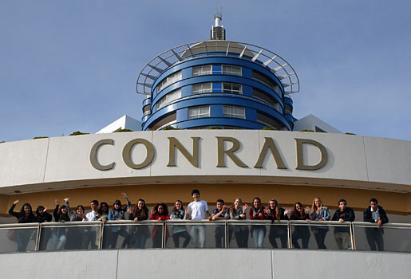
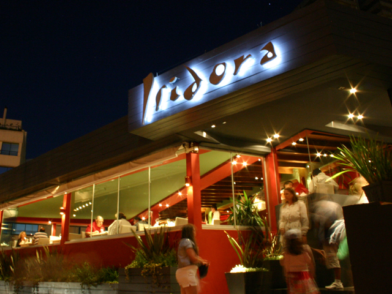

Informacion de Punta del Este!!
Conrad Punta del Este
El Conrad es un hotel y casino 5 estrellas, localizado a orillas de Playa Mansa, en el balneario de Punta del Este, Uruguay, frente a la Isla Gorriti. Cuenta con 294 habitaciones, incluyendo 41 suites de lujo.
La construcción del hotel comenzó en marzo de 1993, en la que trabajaron 1.700 obreros hasta su inauguración oficial, el día 14 de noviembre de 1997.
El casino de Conrad es el único privado de toda Latinoamérica. Tiene 3.400 m² y 75 mesas diferentes distribuidas en 3 salas, y 582 máquinas de slots. Conrad también tiene un área de 450 m² destinada solamente a clientes VIP.
Guappa Resto & Caffe
Distinguen a Guappa la buena cocina internacional y la mejor vista del Puerto de Punta del Este, la Isla Gorriti y la Bahía de San Fernando de Maldonado, desde el extremo sur del arco de arena. Convergen la vieja y la nueva gastronomía de Punta del Este en el deck sobre la playa, en el salón principal y el exclusivo salón del primer piso (ambos climatizados), donde la cocina de Guappa se brinda en deliciosa experiencia al exigente paladar cosmopolita.

La carta de Guappa cuenta con una amplia variedad de opciones para todos los gustos y ocasiones… tablas de quesos y fiambres, chivitos, sandwiches y paninis, huevos, rissottos, sopas, pastas, pescados, mariscos, carnes, aves y postres, en cuidadas preparaciones valoradas por el público internacional.
Además de la la cocina y la inigualable vista que caracterizan a Guappa, clientes y amigos aprecian especialmente el abanico de bodegas que acompañan la intensa frescura del menú. Panes, repostería y conservas también son elaborados artesanalmente.
Isidora Restaurante
Isadora es un restaurante situado al pie del puerto de Punta del Este, que ofrece una gastronomía de acento internacional, pero que trasluce las costumbres y sabores de la región costera.
Su menú a la carta se compone de entraditas, como las tostaditas de pan de especias con distintos tipo de paté, quesos fundidos, frutos secos y escabeches; ensaladas, tapas frías y calientes, tabla de quesos ahumados, frituras (como los bastones de muzzarella, las papas, las rabas).
Los platos principales se componen de distintas minutas, pastas, pescados con distintos métodos de cocción, carnes vacunas al horno, a la plancha y a la brasas, pollos, cerdo y chivito. Entre los postres podeos destacar los helados, las cremas heladas, los panqueques, la mousse y las frutas confitadas. Puede visitar Isadora todos los días de la semana, al mediodía y a la noche.